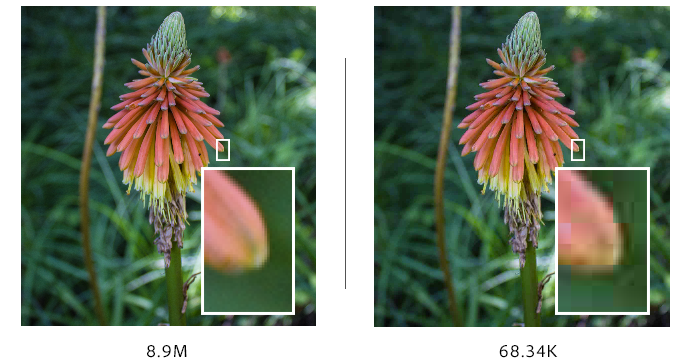

Compressie kan bij geluidsfragmenten. Dan is het eigenlijk verkleinen van het dynamisch verschil, dat is het verschil tussen de zachtste en luidste delen van een audiosignaal. Bij afbeeldingen kan ook compressie worden toegepast. Dan wordt het bestand kleiner gemaakt. Dat wordt gedaan omdat een foto bijvoorbeeld te groot is om op te slaan of om te versturen.
Compressie bestaat uit twee soorten compressie, lossy compression en lossless compression. Bij lossy compression wordt er informatie uit het originele bestand aangepast en verwijderd. Hierdoor wordt de omvang van het bestand kleiner. Bij lossless compression wordt het op een effectievere manier opgeslagen, de originele kwaliteit wordt dus niet beïnvloedt. Het wordt gecomprimeerd dus het kan altijd weer omgezet worden naar het origineel. Dat kan niet met lossy compression.

Hiernaast zie je een plaatje. Het plaatje laat compressie zien bij afbeeldingen, het linker plaatje is het origineel maar dat bestand is te groot om bijvoorbeeld te versturen. Dus ze passen compressie toe en het bestand wordt kleiner gemaakt. En dat geeft het resultaat dat er minder pixels in de afbeelding komt en dus dat de afbeelding minder scherp wordt.
Op het plaatje hiernaast zie je compressie bij audio. De blauwe lijntjes geven de originele audio aan. Maar het dynamisch verschil tussen het luidste en het zachtste deel is te groot. Dus er moet compressie worden toegepast en dan wordt de originele audio verandert naar de rode lijntjes.